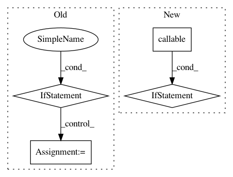

f528c38e26d59b231dd94b87d6603ca243fee766,deeppavlov/core/commands/train.py,,train_model_from_config,#Any#,86
Before Change
def train_model_from_config(config_path: str):
config = read_json(config_path)
if "chainer" in config:
return train_chainer(config_path)
reader_config = config["dataset_reader"]
reader = get_model(reader_config["name"])()
data_path = expand_path(reader_config.get("data_path", ""))
data = reader.read(data_path)
dataset_config = config["dataset"]
dataset: Dataset = from_params(dataset_config, data=data)
vocabs = {}
for vocab_param_name, vocab_config in config.get("vocabs", {}).items():
v: Estimator = from_params(vocab_config, mode="train")
vocabs[vocab_param_name] = _fit(v, dataset)
model_config = config["model"]
model = from_params(model_config, vocabs=vocabs, mode="train")
train_config = {
"metrics": ["accuracy"],
"validate_best": True,
"test_best": True
}
try:
train_config.update(config["train"])
except KeyError:
log.warning("Train config is missing. Populating with default values")
metrics_functions = list(zip(train_config["metrics"], get_metrics_by_names(train_config["metrics"])))
if callable(getattr(model, "train_on_batch", None)):
_train_batches(model, dataset, train_config, metrics_functions)
_fit(model, dataset, train_config)
if train_config["validate_best"] or train_config["test_best"]:
try:
model_config["load_path"] = model_config["save_path"]
except KeyError:
log.warning("No "save_path" parameter for the model, so "load_path" will not be renewed")
model = from_params(model_config, vocabs=vocabs, mode="infer")
log.info("Testing the best saved model")
After Change
if callable(getattr(model, "train_on_batch", None)):
_train_batches(model, dataset, train_config, metrics_functions)
elif callable(getattr(model, "fit", None)):
_fit(model, dataset, train_config)
elif not isinstance(model, Chainer):
log.warning("Nothing to train")
In pattern: SUPERPATTERN
Frequency: 3
Non-data size: 4
Instances
Project Name: deepmipt/DeepPavlov
Commit Name: f528c38e26d59b231dd94b87d6603ca243fee766
Time: 2018-02-28
Author: yoptar@gmail.com
File Name: deeppavlov/core/commands/train.py
Class Name:
Method Name: train_model_from_config
Project Name: keras-team/keras
Commit Name: 1dc67f374cde47a721e5fe5d9237bc2573bda2f0
Time: 2017-07-06
Author: souptc@gmail.com
File Name: keras/backend/cntk_backend.py
Class Name:
Method Name: in_test_phase
Project Name: keras-team/keras
Commit Name: c3eb62763fcc5029c26b025ba1b60d7788d491a1
Time: 2019-03-30
Author: andhus@kth.se
File Name: keras/engine/saving.py
Class Name:
Method Name: save_model